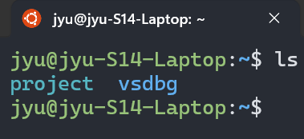
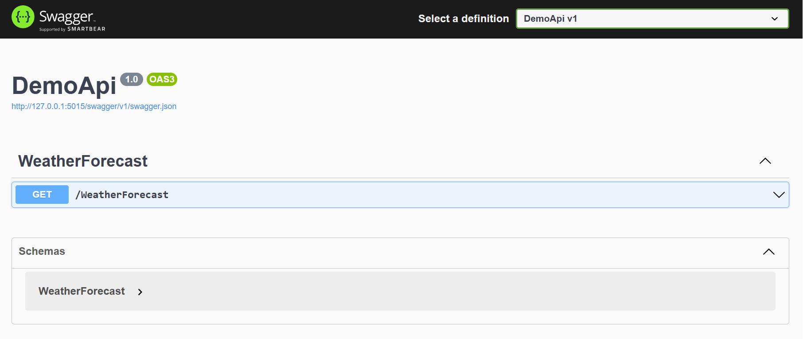
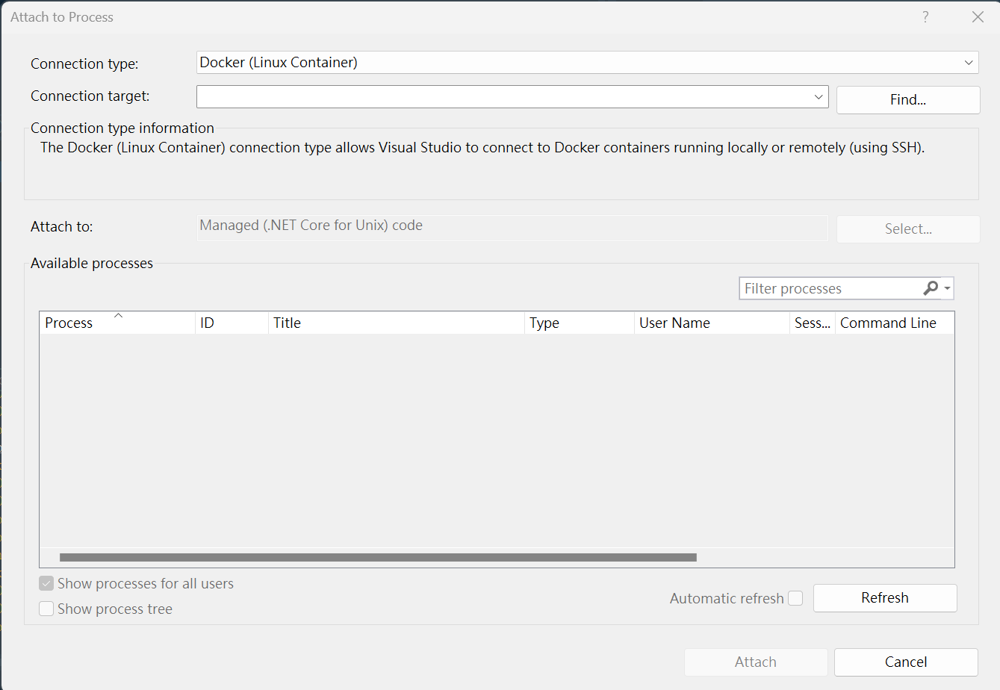
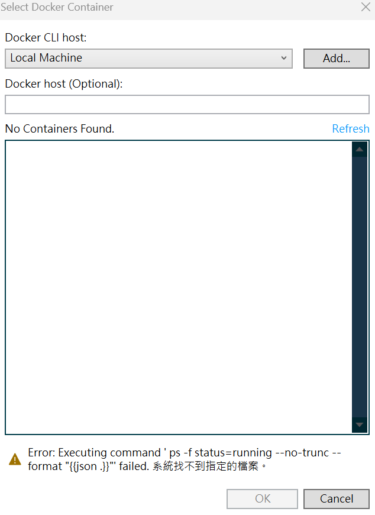
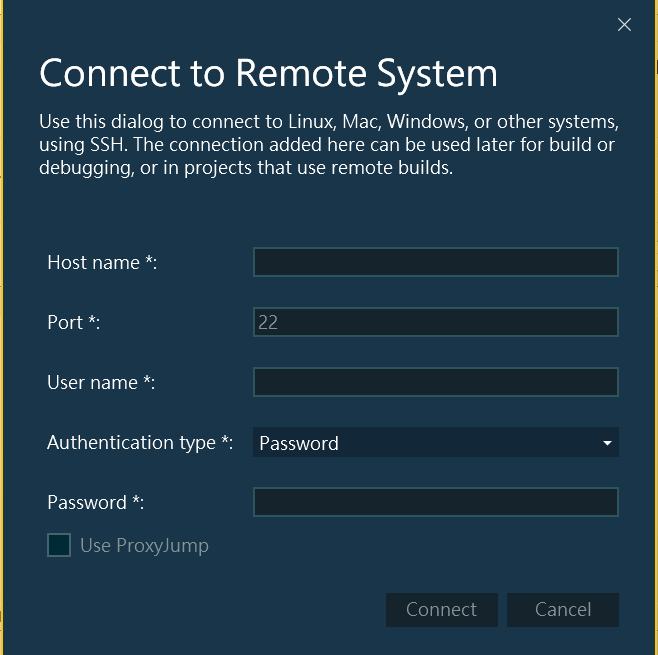
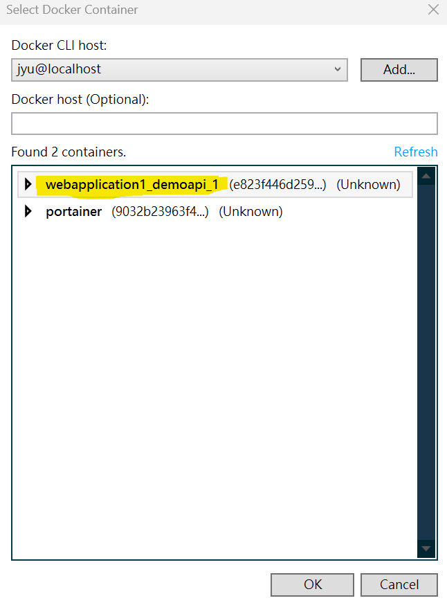
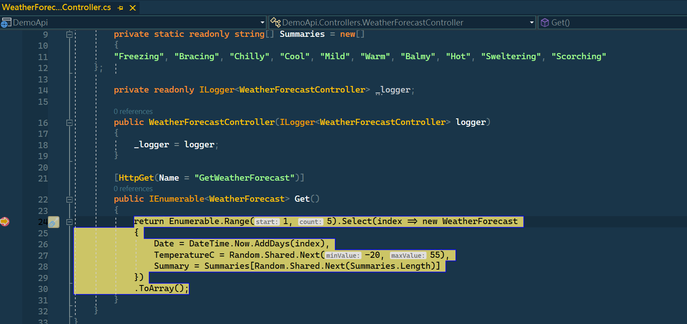

Windows環境未安裝Docker Desktop，運行WSL2+Ubuntu子系統有安裝Docker Enginer環境下，Visual studio附加串接至容器進行偵錯配置筆記。
如果使用情境比較複雜，此筆記紀錄方法不確定是否可適用，需再自行評估是否還是需要Docker Desktop來輔助。
使用環境：
Step 1. WSL安裝設置
使用Winodws內WSL(Windows Subsystem for Linux)功能，使用版本為V2 –> WSL2
關於WSL2安裝可以參考 How to install Linux on Windows with WSL，安裝過程也會順便創建最新版Ubuntu子系統，後面操作以此Linux環境操作。
再此紀錄時間點下，使用Ubuntu最新版本為
Ubuntu Jammy 22.04 (LTS)
Step 2. 安裝Docker Engine
Docker容器是放置在Linux環境下，需要在Ubuntu終端機介面下，進行Docker Enginer安裝，可以參考Install Docker Engine on Ubuntu
此筆記是Windows不安裝Docker Desktop，如果Windows要使用Docker容器的話，常見介紹作法是安裝Docker Desktop，可以參考Install Docker Desktop on Windows
因為安裝過程會自動幫你透過WSL建置Docker Enginer相關設定和實體，算是懶人包操作處理，透過Docker Desktop來管理整個Docker Enginer運作。
簡單來說，Windows實際上還是運行Linux環境操作Docker容器(預設使用Linux Container情況)。
Step 3. 安裝SSH Server
使用OpenSSH Server工具，可以參考OpenSSH Server
根據Attach to a process running on a Docker container - Prerequisites，透過以下指令進行安裝openssh-server
sudo apt-get install openssh-server unzip curl
確認SSH Server服務狀態
sudo service ssh status
安裝完之後，SSH Server服務是未啟動狀態，需再手動將其服務啟動
sudo service ssh start
Windows環境測試SSH連接
ssh <username>@<ip-address>
<username> –> WSL下Ubuntu的User Name<ip-address> –> WSL下Ubuntu的IP，使用127.0.0.1即可EX：<username> = test01
ssh test01@127.0.0.1
當終端機顯示以下訊息，請輸入yes按下Enter送出
Are you sure you want to continue connecting (yes/no/[fingerprint])?
之後會出現輸入登入密碼，輸入成功後即可成功連到SSH Server。
Step 4. 掛載專案存放位置
WSL底下Ubuntu預設使用者目錄內沒有對應Windows本機上專案存放目錄，可以將Windows存放專案目錄做一個軟連結(link)。
WSL底下Ubuntu預設有跟Windows本機檔案目錄做一個掛載地方–>/mnt，如果用ls顯示該目錄底下內容，可以看到以Windows上磁碟曹代號目錄。
假設Windows上存放專案目錄在C:\Project，對應/mnt/c/project，依據此位置在使用者根目錄(~)下建軟連結目錄。
ln -s /mnt/c/project /home/jyu
將
/mnt/c/project建立軟連結在使用者目錄底下–>/home/jyu
透過ls查看根目錄(~)底下內容，可以發現多了一個project名稱目錄。

使用Visual Studio建立預設API專案作為範例。
專案需要有docker相關運作配置，可以參考Adding Docker support
以docker-compose做範例，docker-compose相關yaml配置檔在WSL內Ubuntu底下位置–>~/project/Local/WebApplication1。
以下指令皆在WSL內Ubuntu終端機介面執行。
切換至專案目錄底下
cd ~/project/Local/WebApplication1
~代表在當前使用者家目錄。 範例專案名稱為WebApplication1。
執行運作
docker-compose -f docker-compose.yml -f docker-compose.override.yml up -d
-f代表要引用的yaml配置檔案。-d代表運作起來在背景常駐執行，當前終端機不持續追蹤運行容器程序之中。
範例API專案預設配置Port為5015(不一定都是)，開啟Swagger介面位址–>http://127.0.0.1:5015/swagger/index.html

開始偵錯前需要確認以下事項
Step 1. Visual Studio內點擊Debug–>Attach to Process

Connection Type 選擇
Docker(Linux Container)
Step 2. 點擊Connection target旁邊Find按鈕

點選Add按鈕，出現登入SSH介面

Host Name輸入
localhost，因為是在本機內WSL底下Ubuntu。 Port使用SSH預設22。 Authentication type選擇Password。 User Name和Password輸入WSL底下Ubuntu使用者帳戶登入名稱和密碼。
點擊Connect正常連到之後，可以看到WSL內Ubuntu底下運行Container清單，找到範例專案webapplication1_demoapi_1並選取按OK。

之後回到Attach to Process介面，可以看到被選取的容器專案，按下Attach後Visual Studio即會開始進行連結偵錯。
找到範例API下中斷點，回到Swagger介面測試該API呼叫，可以發現中斷點可執行運作。

如果更改程式還需要在重新連結偵錯，需要把Conatiner刪除重新在建置運行一次，Visual Studio需要再透過Attach to Process操作來執行。